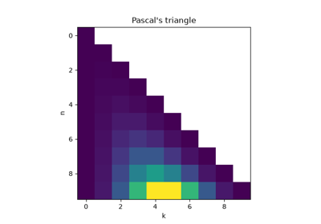
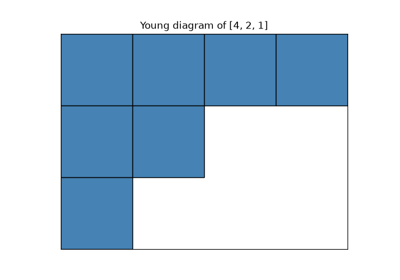
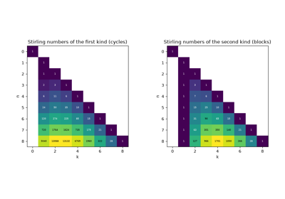
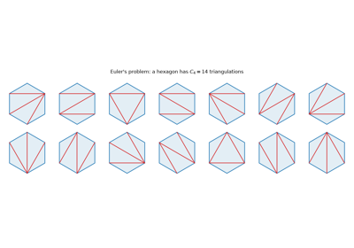
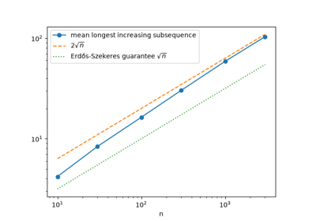
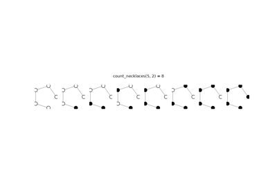

Breakthroughs in Combinatorics#
“Combinatorics is the pegboard of mathematics.” – Gian-Carlo Rota
Counting things exactly – not approximately, not asymptotically, but
exactly – turns out to be a surprisingly deep subject, full of hidden
bijections between problems that look nothing alike. This chronology
traces the ideas behind mathematicskit.combinatorics, from
Fibonacci’s rabbits and Pascal’s triangle to Ramsey theory, Pólya’s
enumeration theorem, and the partition function, whose growth Srinivasa
Ramanujan and Godfrey Harold Hardy could only capture by inventing a
new method of complex analysis.
1202 – Fibonacci’s Rabbits#
Leonardo of Pisa, known as Fibonacci, posed a puzzle in his 1202 Liber Abaci: starting from one pair of rabbits, where every mature pair produces a new pair each month, how many pairs are there after a year? The monthly counts \(1, 2, 3, 5, 8, \dots\) follow the rule \(F_n = F_{n-1} + F_{n-2}\) and reach 377. The same numbers had already appeared in Indian prosody, where Virahanka and Hemachandra counted the rhythms made of short and long syllables. In modern terms they count the ways to tile a \(2 \times n\) strip with dominoes, and the ratio of successive terms tends to the golden ratio \(\varphi = (1+\sqrt5)/2\).
Implementation: mathematicskit.combinatorics.systems.sequences.fibonacci()
computes \(F_n\) exactly, and
domino_tilings()
gives the tiling count \(F_{n+1}\). The tests check Cassini’s
identity and Binet’s closed form.
References: L. E. Sigler, Fibonacci’s Liber Abaci: A Translation into Modern English of Leonardo Pisano’s Book of Calculation (New York: Springer, 2002).
1321 – Gersonides’ Counting Formulas#
Levi ben Gershon, known as Gersonides, proved the basic counting formulas in his 1321 Maaseh Hoshev (“The Art of Calculation”), using an early form of mathematical induction. He showed that \(n\) objects can be arranged in \(n!\) orders, that \(k\) of them can be arranged in \(n!/(n-k)!\) ordered ways, and that \(k\) can be chosen in \(n!/\bigl(k!(n-k)!\bigr)\) ways. These are the permutation and combination counts behind every later result in this chronology.
Implementation: mathematicskit.combinatorics.systems.counting.permutations_count()
and combinations_count()
compute these counts with scipy.special.perm() and
scipy.special.comb(), and the example checks them against
enumeration with
generate_permutations()
and generate_combinations().
References: N. L. Rabinovitch, “Rabbi Levi ben Gershon and the Origins of Mathematical Induction,” Archive for History of Exact Sciences 6(3) (1970), 237-248.
1654-1665 – Pascal’s Triangle (and Its Much Older Ancestors)#
Blaise Pascal wrote his Traité du triangle arithmétique in 1654, and it was published posthumously in 1665. It gave the triangular array of binomial coefficients its Western name and a thorough combinatorial treatment. The triangle itself had been discovered independently centuries earlier: in 10th-century India (Halayudha’s commentary on Pingala), in Persia around 1000 (Al-Karaji, and later Omar Khayyam), and in 11th-century China (Jia Xian). Yang Hui popularized it in China in 1261, and it carries his name in Chinese mathematics today. Every version rests on the same recurrence: each entry is the sum of the two entries above it.
Implementation: mathematicskit.combinatorics.systems.pascals_triangle.pascals_triangle()
builds the triangle from this recurrence. It is hand-rolled purely as a
teaching illustration; the primary API is
combinations_count(),
which wraps scipy.special.comb().
References: B. Pascal, Traité du triangle arithmétique (Paris: Guillaume Desprez, 1665).

Pascal’s triangle vs. scipy-computed binomial coefficients
1674-1918 – Young Diagrams and Integer Partitions#
The partition function \(p(n)\) counts the ways to write \(n\) as a sum of positive integers, ignoring order. Gottfried Wilhelm Leibniz studied it in unpublished notes from 1674, and Leonhard Euler found its generating function \(\prod_{k\geq1}(1-x^k)^{-1}\) in the 1740s. Alfred Young’s diagrams, introduced in 1900, draw a partition as left-justified rows of boxes, one row per part, in non-increasing length. Reflecting a diagram across its main diagonal gives the conjugate partition, which reveals hidden symmetries: for example, the number of partitions of \(n\) into \(k\) parts equals the number whose largest part is \(k\). No closed form for \(p(n)\) was ever found, but in 1918 Godfrey Harold Hardy and Srinivasa Ramanujan used their new circle method to give it a precise asymptotic formula.
Implementation: mathematicskit.combinatorics.systems.partitions.partition_function()
computes \(p(n)\) exactly with Euler’s pentagonal-number-theorem
recurrence. This domain does not implement the Hardy-Ramanujan
asymptotic formula.
integer_partitions()
lists every partition explicitly, and
mathematicskit.combinatorics.core.base.YoungDiagram implements
Young’s diagram and its conjugate.
References: A. Young, “On Quantitative Substitutional Analysis,” Proceedings of the London Mathematical Society 33(1) (1900), 97-146; G. H. Hardy and S. Ramanujan, “Asymptotic Formulae in Combinatory Analysis,” Proceedings of the London Mathematical Society 17(1) (1918), 75-115.

Integer partitions, the partition function, and Young diagrams
1708-1713 – Bernoulli, Montmort, and the Derangement Problem#
Pierre Rémond de Montmort’s 1708 Essay d’analyse sur les jeux de hazard posed the problème des rencontres: shuffle a deck, and ask how likely it is that no card ends up in its original position. Such a permutation, with no fixed point, is now called a “derangement.” Montmort and Nicolaus Bernoulli, corresponding between 1710 and 1713, worked out the exact count. Their method is an early instance of the inclusion-exclusion principle: alternately subtract and add the permutations that fix at least one, at least two, at least three points, and so on.
Implementation: mathematicskit.combinatorics.systems.inclusion_exclusion.derangement_count()
computes this count with the equivalent integer recurrence
\(D_n = (n-1)(D_{n-1}+D_{n-2})\).
union_size_inclusion_exclusion()
implements the general inclusion-exclusion principle, of which the
derangement count is one application.
References: P. R. de Montmort, Essay d’analyse sur les jeux de hazard, 2nd ed. (Paris: Jacque Quillau, 1713).

The hat-check problem: derangements via inclusion-exclusion
1713 – Bernoulli Numbers and Sums of Powers#
Jacob Bernoulli’s Ars Conjectandi, published in 1713, gave a general formula for the sum of the \(p\)-th powers of the first \(n\) integers:
The coefficients \(B_j\), now called Bernoulli numbers, were found independently by Seki Takakazu in Japan and published in 1712, and Johann Faulhaber had tabulated many of the power-sum polynomials in 1631. Bernoulli boasted that with his formula he had summed the tenth powers of the first thousand integers “in half of a quarter of an hour.” The same numbers reappear in the Euler-Maclaurin formula and in the values of the Riemann zeta function at even integers.
Implementation: mathematicskit.combinatorics.systems.sequences.bernoulli_numbers()
computes the numbers as exact fractions, and
sum_of_powers()
applies Bernoulli’s formula. The tests check it against direct
summation, and the example repeats his thousand-term computation.
References: J. Bernoulli, Ars Conjectandi (Basel: Thurneysen, 1713), Part II, Ch. 3.

1730 – Stirling’s Numbers#
James Stirling’s 1730 treatise Methodus Differentialis introduced two families of numbers that convert between ordinary powers and falling factorials. In modern terms, Stirling numbers of the first kind count permutations by their number of cycles. Stirling numbers of the second kind count the ways to partition a labeled set into a fixed number of non-empty, unlabeled blocks. Summing the second kind over every possible number of blocks gives the Bell numbers, the total number of ways to partition a set. They are named for Eric Temple Bell, whose 1934 papers studied them.
Implementation: mathematicskit.combinatorics.systems.special_numbers.stirling_first_kind()
and stirling_second_kind()
implement both families with their defining recurrences;
mathematicskit.combinatorics.utils.bell_number.bell_number() sums the
second kind over every possible number of blocks.
References: J. Stirling, Methodus Differentialis (London: Bowyer, 1730).

Stirling’s numbers: cycles, set partitions, and Bell numbers
1751-1838 – Euler, Catalan, and the Catalan Numbers#
In a 1751 letter to Christian Goldbach, Leonhard Euler posed and solved the problem of counting the ways to cut a convex polygon into triangles with non-crossing diagonals. This was the first appearance of the sequence \(1, 1, 2, 5, 14, 42, \dots\). Eugène Charles Catalan’s 1838 paper connected the same numbers to the problem of bracketing a product, and the sequence was later named after him. The same numbers count a remarkable variety of unrelated-looking objects, among them balanced parenthesizations, binary trees, and non-crossing lattice paths. Few integer sequences have as many independent combinatorial meanings.
Implementation: mathematicskit.combinatorics.systems.special_numbers.catalan_number()
implements this recurrence, and is checked against brute-force
enumeration of balanced-parenthesis strings. This domain’s tests keep
the equivalent closed form \(\binom{2n}{n}/(n+1)\) as a
cross-check.
References: E. Catalan, “Note sur une équation aux différences finies,” Journal de Mathématiques Pures et Appliquées 3 (1838), 508-516.

Catalan numbers: Euler’s polygon triangulations and Catalan’s brackets
1782 – Euler’s Officers and Latin Squares#
Leonhard Euler asked in 1782 whether 36 officers, of six ranks and from six regiments, can stand in a \(6 \times 6\) square so that each row and each column holds one officer of every rank and every regiment. The question asks for two orthogonal Latin squares: when superimposed, every pair of symbols appears exactly once. Euler found pairs for every odd order and conjectured that none exist when \(n \equiv 2 \pmod 4\). Gaston Tarry confirmed the case \(n = 6\) in 1900 by exhaustive search, but Raj Chandra Bose, Sharadchandra Shankar Shrikhande, and Ernest Tilden Parker showed in 1959-1960 that pairs exist for every other such \(n > 6\). Latin squares went on to organize agricultural and clinical experiments.
Implementation: mathematicskit.combinatorics.systems.designs.orthogonal_latin_square_pair()
builds an orthogonal pair for any odd order from
cyclic_latin_square(),
and are_orthogonal()
checks the defining property. The tests confirm that no orthogonal
pair exists for \(n = 2\).
References: L. Euler, “Recherches sur une nouvelle espèce de quarrés magiques,” Verhandelingen uitgegeven door het zeeuwsch Genootschap der Wetenschappen te Vlissingen 9 (1782), 85-239; R. C. Bose, S. S. Shrikhande, and E. T. Parker, “Further Results on the Construction of Mutually Orthogonal Latin Squares and the Falsity of Euler’s Conjecture,” Canadian Journal of Mathematics 12 (1960), 189-203.
1889-1918 – Cayley’s Formula and Prüfer Codes#
Arthur Cayley’s 1889 note stated that there are \(n^{n-2}\) trees on \(n\) labeled vertices, a count Carl Wilhelm Borchardt had derived in 1860 by a determinant argument. Heinz Prüfer’s 1918 proof was a bijection. Repeatedly deleting the smallest-labeled leaf and writing down its neighbour turns each tree into a sequence of length \(n-2\) over \(n\) labels, and every such sequence decodes to exactly one tree. Since there are \(n^{n-2}\) sequences, there are \(n^{n-2}\) trees. The proof is a standard example of counting by constructing an explicit one-to-one correspondence.
Implementation: mathematicskit.combinatorics.systems.trees.prufer_encode()
and prufer_decode()
implement Prüfer’s bijection, and
count_labeled_trees()
gives Cayley’s count. The tests decode every sequence for
\(n \le 6\) and confirm that the result is one-to-one.
References: A. Cayley, “A Theorem on Trees,” Quarterly Journal of Pure and Applied Mathematics 23 (1889), 376-378; H. Prüfer, “Neuer Beweis eines Satzes über Permutationen,” Archiv der Mathematik und Physik 27 (1918), 142-144.
1930 – Ramsey’s Theorem#
Frank Ramsey’s 1930 paper, written to settle a question in logic, proved that complete disorder is impossible: color the edges of a large enough complete graph with two colors, and a one-colored complete subgraph of any prescribed size must appear. The smallest case is the party problem. Among any six people, three are mutual acquaintances or three are mutual strangers, but five people are not enough, so \(R(3,3) = 6\). Robert Greenwood and Andrew Gleason computed this and other small Ramsey numbers in 1955. Exact values remain famously hard: \(R(5,5)\) is still unknown.
Implementation: mathematicskit.combinatorics.systems.extremal.count_triangle_free_colorings()
searches every 2-coloring of \(K_n\), and
has_monochromatic_triangle()
tests one coloring. The tests find triangle-free colorings of
\(K_5\) and none of \(K_6\).
References: F. P. Ramsey, “On a Problem of Formal Logic,” Proceedings of the London Mathematical Society s2-30(1) (1930), 264-286; R. E. Greenwood and A. M. Gleason, “Combinatorial Relations and Chromatic Graphs,” Canadian Journal of Mathematics 7 (1955), 1-7.
1935 – Hall’s Marriage Theorem#
Philip Hall’s 1935 paper answered a question about choosing distinct representatives from a family of sets. In matching language: when can every person on one side of a bipartite graph be paired with a distinct partner on the other? An obvious necessary condition is that every group of \(k\) people must know at least \(k\) possible partners between them. Hall proved that this condition is also sufficient. The theorem is equivalent to Dénes Kőnig’s 1931 theorem on bipartite graphs and to the max-flow min-cut theorem, and it underlies many existence proofs in combinatorics.
Implementation: mathematicskit.combinatorics.systems.matching.hall_condition()
checks the condition on every subset and reports a violating subset
when one exists, and
maximum_matching()
finds a largest matching by augmenting paths. The tests confirm on
random graphs that the condition holds exactly when a perfect matching
exists.
References: P. Hall, “On Representatives of Subsets,” Journal of the London Mathematical Society s1-10(1) (1935), 26-30.
1935 – The Erdős-Szekeres Theorem#
Paul Erdős and George Szekeres proved in 1935 that any sequence of \((r-1)(s-1)+1\) distinct numbers contains an increasing subsequence of length \(r\) or a decreasing one of length \(s\), and that one fewer term is not enough. The result was a step in their work on convex polygons in point sets (the “happy ending problem”) and an early theorem of Ramsey type. For a random permutation of \(n\) numbers, Anatoly Vershik and Sergei Kerov, and independently Benjamin Logan and Larry Shepp, showed in 1977 that the longest increasing subsequence has length close to \(2\sqrt n\).
Implementation: mathematicskit.combinatorics.systems.extremal.longest_increasing_subsequence()
finds a longest increasing subsequence in \(O(n\log n)\) time by
patience sorting, and
longest_decreasing_subsequence()
does the same for decreasing ones. The tests check the bound and a
sequence that meets it exactly.
References: P. Erdős and G. Szekeres, “A Combinatorial Problem in Geometry,” Compositio Mathematica 2 (1935), 463-470.

The Erdős-Szekeres theorem: monotone subsequences
1937 – Pólya’s Enumeration Theorem#
George Pólya’s 1937 paper, motivated by counting chemical isomers, turned counting up to symmetry into a routine calculation. The cycle structure of each symmetry determines how many colorings it leaves unchanged. For necklaces of \(n\) beads in \(k\) colors under rotation, a rotation by \(i\) positions has \(\gcd(i, n)\) cycles, which gives
John Howard Redfield had published the same idea in 1927, but it went unnoticed until the 1960s.
Implementation: mathematicskit.combinatorics.systems.necklaces.count_necklaces()
and count_bracelets()
evaluate Pólya’s formulas for rotations and for rotations with
reflections. The tests check both against brute-force enumeration.
References: G. Pólya, “Kombinatorische Anzahlbestimmungen für Gruppen, Graphen und chemische Verbindungen,” Acta Mathematica 68 (1937), 145-254.

Pólya’s enumeration theorem: necklaces and bracelets
1953 – Gray Codes#
Frank Gray’s patent, filed in 1947 and granted in 1953, described a way to list all \(n\)-bit binary words so that neighbouring words differ in exactly one bit. The reflected binary code, \(g_k = k \oplus \lfloor k/2 \rfloor\), lists the \((n-1)\)-bit code, then the same list in reverse with a leading 1. Gray used it in analog-to-digital converters, where changing several bits at once could produce large errors. The code also solves the Chinese rings puzzle, analyzed by Louis Gros in 1872, and it is the simplest example of a combinatorial Gray code, a listing of objects in which each step makes a minimal change.
Implementation: mathematicskit.combinatorics.systems.sequences.gray_code()
generates the reflected binary Gray code, and the tests confirm that
consecutive codes, including the last and the first, differ in one
bit.
References: F. Gray, “Pulse Code Communication,” U.S. Patent 2,632,058 (1953).